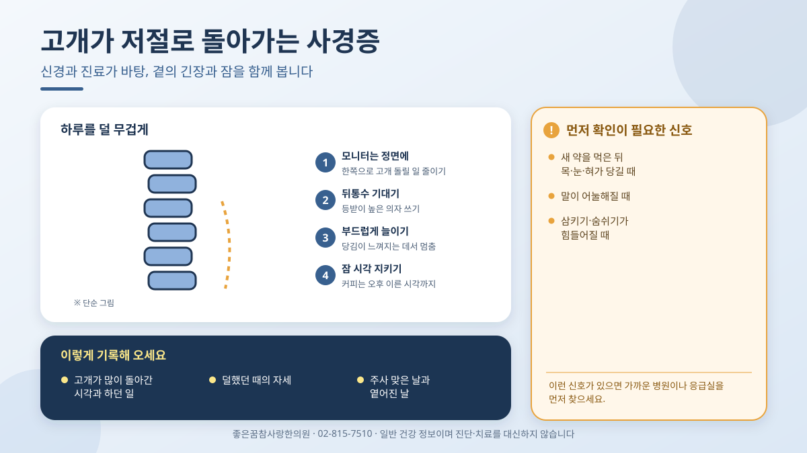

이종호 한의사 감수좋은꿈참사랑한의원 대표원장 (한의사 면허번호 19769)발행 2026-11-26 · 수정 2026-11-26
이 글의 차례
모니터를 보며 일을 하다가 문득 고개가 오른쪽으로 슬금슬금 돌아가 있는 것을 알아차립니다. 바로 세워 보지만 몇 분 지나면 다시 같은 쪽으로 끌려갑니다. 거울을 보면 한쪽 어깨가 올라가 있고, 사진을 찍을 때마다 고개가 비뚤게 나옵니다. 누가 "왜 자꾸 고개를 돌리세요?" 하고 물으면 뭐라 설명해야 할지 막막해집니다.
진료실에서 이런 이야기를 들으면 저는 먼저 그 마음고생을 여쭙습니다. 아픈 것보다 남의 시선이 더 힘들다고 말씀하시는 분이 많기 때문입니다. 처음에는 담이 걸렸나, 베개가 안 맞나 싶어 여러 가지를 바꿔 보지만, 몇 주가 지나도 같은 방향으로 고개가 끌려가면 그때서야 이상하다고 느끼십니다.
이렇게 목 근육이 의지와 상관없이 수축해 고개가 돌아가거나 기울고, 때로는 떨리듯 흔들리는 상태를 경부 근긴장이상, 흔히 사경증이라고 부릅니다. 근육 자체가 다친 것이라기보다, 근육에 힘을 주고 빼는 신호를 조절하는 뇌의 회로가 엇갈려 생기는 것으로 설명합니다.
이 글에서는 사경증이 어떤 모습으로 나타나는지, 흔한 목 담 결림과 무엇이 다른지, 신경과 진료와 함께 한의원에서는 무엇을 살필 수 있는지를 차근차근 정리해 보겠습니다.
사경증은 어떤 모습으로 나타나나요
가장 흔한 모습은 고개가 한쪽으로 돌아가는 것입니다. 오른쪽이나 왼쪽으로 돌아가기도 하고, 귀가 어깨 쪽으로 기울기도 하며, 턱이 앞으로 빠지거나 뒤로 젖혀지기도 합니다. 여러 방향이 섞여 나타나는 경우도 흔합니다.
고개가 끌려가는 것과 함께 목과 어깨가 뻐근하게 아픈 분이 많습니다. 하루 종일 반대쪽으로 버티느라 근육이 쉬지 못하기 때문입니다. 어떤 분은 고개가 잘게 떨리듯 흔들리는 모습이 먼저 보이기도 합니다.
증상은 대개 서서히 시작합니다. 처음에는 피곤하거나 긴장할 때만 살짝 나타나다가 몇 달에 걸쳐 조금씩 뚜렷해지는 경우가 많습니다. 아침에 막 일어났을 때는 덜하고, 오후로 갈수록 또는 사람들 앞에서 긴장할수록 심해지는 흐름도 자주 보입니다.
특이한 점이 하나 있습니다. 손가락으로 턱이나 뺨을 살짝 대기만 해도 고개가 바로 서는 경우가 있습니다. 힘을 주어 밀지 않아도 그렇습니다. 이것을 감각 속임이라고 부르는데, 사경증을 알아보는 단서 가운데 하나입니다. 뒤통수를 벽이나 의자 등받이에 기대면 덜해지는 분도 계십니다.
왜 고개가 저절로 돌아가는 걸까요
우리가 고개를 돌릴 때는 한쪽 근육이 당기고 반대쪽 근육이 풀어지는 일이 정확한 순서로 일어납니다. 이 조절을 맡는 뇌 깊은 곳의 회로가 엇갈리면, 쉬어야 할 근육에도 계속 힘이 들어가 고개가 한쪽으로 끌려갑니다.
왜 그 회로가 엇갈리는지는 아직 다 밝혀지지 않았습니다. 특별한 원인 없이 생기는 경우가 가장 많고, 가족 가운데 비슷한 증상이 있는 분도 있습니다. 드물게 일부 약을 먹은 뒤나 목을 다친 뒤에 시작되기도 해서, 진료실에서는 증상이 시작되기 전 무슨 일이 있었는지를 꼭 여쭙습니다.
피로와 긴장, 짧은 잠은 사경증을 직접 만들지는 않지만 증상을 더 도드라지게 합니다. 바쁜 주간에 고개가 더 많이 돌아가고, 푹 쉰 주말에는 덜하다고 말씀하시는 분이 많습니다. 추운 날 어깨를 움츠리고 다니거나 한쪽으로만 가방을 메는 습관도 목의 부담을 더하는 쪽으로 작용할 수 있습니다. 그래서 생활을 살피는 일이 의미가 있습니다.
한의학에서는 이렇게 근육이 제멋대로 당기고 떨리는 모습을 예로부터 풍(風)이 움직인다고 표현해 왔습니다. 이는 진찰할 때 몸의 흐름을 살피는 전통적인 설명이지 병명을 대신하는 진단은 아닙니다. 진료실에서는 이 관점을 참고해 긴장과 피로, 잠, 손발의 온도를 함께 살핍니다.
목 담 결림이나 다른 목 문제와 무엇이 다른가요
자고 일어났더니 목이 한쪽으로 돌아가지 않는 담 결림은 흔합니다. 담 결림은 대개 갑자기 생기고, 돌리려 하면 아파서 못 돌리는 것이며, 며칠에서 한두 주 사이에 풀리는 경우가 많습니다. 사경증은 반대로 고개가 저절로 돌아가는 쪽이고, 몇 달에 걸쳐 이어집니다.
목디스크나 목뼈 퇴행이 있으면 목이 뻣뻣하고 팔로 저림이 내려오기도 하지만, 고개가 스스로 한쪽으로 끌려가지는 않습니다. 영상 검사에서 목뼈 변화가 보이더라도, 고개가 끌려가는 움직임 자체는 따로 살펴야 합니다.
아기에게 보이는 사경은 목 앞쪽 근육이 짧아져 생기는 경우가 많아 소아과나 재활의학과에서 따로 살핍니다. 어른에게 새로 생긴 사경증과는 원인이 다릅니다.
손 떨림이 함께 있는 분도 계십니다. 떨림과 근긴장이상은 함께 나타나기도 해서, 신경과에서 두 가지를 함께 평가하는 경우가 있습니다. 진단은 신경과 선생님의 진찰이 기준이 되고, 한의원에서는 그 결과를 바탕으로 생활과 몸의 긴장을 함께 봅니다.
신경과 치료는 어떻게 이루어지나요
사경증의 기본 치료는 신경과에서 이루어집니다. 가장 많이 쓰이는 방법은 지나치게 힘이 들어간 근육에 주사를 놓아 수축을 누그러뜨리는 것입니다. 효과가 서서히 나타났다가 몇 달 뒤 옅어지기 때문에 일정한 간격으로 반복하는 경우가 많습니다.
먹는 약을 함께 쓰기도 하고, 증상이 심하고 다른 방법으로 조절이 어려운 경우에는 수술을 고려하기도 합니다. 어떤 방법이 맞는지는 신경과 선생님이 고개가 돌아가는 방향과 정도를 보고 판단합니다.
주사 효과가 옅어지는 시기에 목과 어깨가 다시 뻐근해지고 잠이 얕아진다고 말씀하시는 분이 많습니다. 이 시기의 불편을 기록해 두시면 신경과 진료 때도, 한의원 상담 때도 큰 도움이 됩니다. 처방받은 약은 상의 없이 멈추지 않으셔야 합니다.
일터와 집에서는 어떻게 지내면 덜 힘들까요
책상 일을 하신다면 자리 배치부터 살펴봅니다. 전화기, 서류, 모니터가 한쪽에 몰려 있으면 하루 종일 같은 쪽으로 고개를 돌리게 됩니다. 자주 보는 물건을 정면 가까이로 옮기기만 해도 목이 버티는 시간이 줄어듭니다.
운전은 고개를 좌우로 자주 돌려야 해서 부담이 큰 일입니다. 증상이 심한 날에는 운전을 짧게 하거나 다른 방법을 고르시고, 차선을 바꿀 때 고개 돌리기가 어렵다면 신경과 선생님과 운전에 관해 상의해 보세요.
잘 때는 베개 높이가 중요합니다. 너무 높으면 목이 앞으로 꺾이고, 너무 낮으면 고개가 한쪽으로 쉽게 넘어갑니다. 수건을 접어 높이를 조금씩 바꿔 가며 아침에 목이 가장 편한 높이를 찾아보세요. 옆으로 누우실 때는 어깨와 귀 사이가 비지 않도록 받쳐 주는 것이 좋습니다.
가족이나 가까운 동료에게 상태를 한 번쯤 설명해 두시는 것도 도움이 됩니다. 고개가 돌아가는 이유를 알고 나면 주변의 시선이 걱정보다 배려로 바뀌는 경우가 많고, 그만큼 긴장도 줄어듭니다.
먼저 이렇게 여쭙니다
처음 오시면 저는 대략 이런 순서로 여쭙니다. 미리 생각해 오시면 이야기가 훨씬 수월해집니다.
- 고개가 돌아가는 것을 처음 알아챈 때는 언제이고, 그 무렵 새로 드신 약이나 다친 일이 있었나요?
- 고개가 주로 어느 방향으로 끌려가나요? 돌아가나요, 기우나요, 앞뒤로 빠지나요?
- 턱에 손을 대거나 뒤통수를 기대면 덜해지나요?
- 아침과 저녁, 쉴 때와 긴장할 때 차이가 있나요?
- 신경과 진료를 받으셨나요? 주사나 약 치료를 하고 계신가요?
- 잠은 어떠신가요? 통증 때문에 깨는 일이 있나요?
가족 가운데 비슷하게 고개나 손이 떨리거나 돌아가는 분이 있는지도 여쭙니다. 모든 질문에 정확히 답하지 못하셔도 괜찮습니다. 휴대폰으로 고개가 돌아가는 모습을 앉아 있을 때와 걸을 때 나눠 짧게 찍어 오시면 말보다 훨씬 많은 것을 알려 줍니다.
일상에서 먼저 해 볼 수 있는 것
사경증은 생활만으로 사라지는 상태는 아니지만, 하루의 불편을 덜어 주는 작은 요령은 있습니다. 한꺼번에 다 하시기보다 맞는 것을 골라 보세요.
- 모니터와 텔레비전은 고개가 돌아가는 반대쪽이 아니라 정면에 두기
- 오래 앉을 때는 등받이가 높은 의자를 써서 뒤통수를 가볍게 기대기
- 손가락을 턱에 대는 동작이 도움이 된다면 부끄러워하지 말고 쓰기
- 한 시간에 한 번 일어나 어깨를 크게 돌리고 숨을 길게 내쉬기
- 따뜻한 수건으로 목과 어깨를 데운 뒤 가볍게 풀어 주기
- 잠드는 시각을 일정하게 지키고, 커피는 오후 이른 시각까지만
스트레칭은 아프지 않은 범위에서 부드럽게 하는 것이 좋습니다. 돌아가는 쪽 반대로 억지로 세게 당기면 오히려 근육이 더 버티려고 할 수 있습니다. 숨을 내쉬면서 천천히 늘이고, 당김이 느껴지는 데서 멈추세요.
긴장을 다루는 일도 생활 관리의 큰 부분입니다. 사람들 앞에서 증상이 심해질까 걱정하면 그 걱정이 다시 긴장을 부릅니다. 하루 몇 분이라도 등을 대고 누워 숨을 길게 내쉬는 시간을 만들어 두시면 몸이 쉬는 법을 조금씩 다시 익힙니다.
한의원에서 함께 살필 수 있는 경우
- 신경과 치료를 받고 있지만 목과 어깨 통증이 따로 남아 있는 경우
- 주사 효과가 옅어지는 시기에 뻐근함이 심해지는 경우
- 고개를 버티느라 날개뼈 주변과 등까지 뭉치는 경우
- 증상이 신경 쓰여 잠이 얕아지고 긴장이 이어지는 경우
- 피로가 쌓이면 증상이 더 도드라진다고 느끼는 경우
좋은꿈참사랑한의원에 오시면 먼저 아래 '먼저 확인이 필요한' 신호가 없는지부터 봅니다. 그다음 맥을 짚고, 고개가 돌아가는 방향과 함께 반대쪽에서 버티는 근육, 어깨와 등의 긴장을 손으로 확인합니다. 잠과 소화, 긴장하는 상황도 함께 여쭙습니다.
진찰한 내용을 바탕으로 침, 온열 관리, 한약 상담 가운데 지금 상태에 맞는 것을 정합니다. 침은 목에만 두지 않고 어깨와 등, 팔의 긴장을 함께 살피는 쪽으로 정하는 경우가 많습니다. 한약을 상의할 때는 신경과에서 받은 약을 모두 확인하고 신중하게 정합니다.
한의원 진료는 신경과 치료를 대신하는 것이 아니라 나란히 가는 것입니다. 주사 일정이 있다면 그 앞뒤로 진료 간격을 어떻게 둘지도 함께 맞춥니다. 사경증 자체를 바로잡는다고 약속드리기는 어렵고, 그 곁의 통증과 긴장, 잠을 함께 돌본다고 생각해 주시면 됩니다.
이렇게 기록해 오시면 상담이 쉬워집니다
사경증은 날마다, 시간마다 정도가 달라서 진료실에서 잠깐 보는 모습만으로는 다 알기 어렵습니다. 2주 정도만 간단히 적어 보세요.
- 고개가 가장 많이 돌아간 시각과 그때 하던 일
- 덜했던 때와 그때의 자세, 기분
- 목과 어깨 통증을 0에서 10으로 적은 숫자
- 잠든 시각과 깬 시각, 통증으로 깬 횟수
- 신경과 주사를 맞은 날과 효과가 옅어진다고 느낀 날
- 커피, 술, 긴장했던 일정 표시
기록을 나란히 놓고 보면 어떤 상황에서 증상이 도드라지는지가 보이기 시작합니다. 그 흐름은 신경과 선생님께도 주사 간격과 부위를 정하는 데 도움이 됩니다.
남의 시선보다 내 하루를 먼저
사경증을 겪는 분들은 고개보다 마음이 먼저 지치는 경우가 많습니다. 사람 많은 곳을 피하게 되고, 사진을 찍지 않게 되고, 대화할 때 상대의 눈을 피하게 됩니다. 그 마음이 이해됩니다.
그래도 하나만 기억해 주세요. 고개가 돌아가는 것은 의지가 약해서 생기는 일이 아니라 몸의 신호가 엇갈려 생기는 일입니다. 신경과 치료로 바탕을 잡고, 그 곁에서 통증과 잠, 긴장을 함께 살피면 하루가 조금은 덜 무거워질 수 있습니다. 다음에 오시면 고개가 돌아가는 모습을 찍은 짧은 영상부터 함께 보겠습니다.
이런 증상은 먼저 확인이 필요합니다
- 새로 먹기 시작한 약 뒤에 갑자기 목이나 눈, 혀가 한쪽으로 당기며 돌아가는 경우
- 고개가 돌아가며 말이 어눌해지거나 삼키기, 숨쉬기가 힘들어지는 경우
이런 신호가 있으면 한의원보다 가까운 병원이나 응급실을 먼저 찾으세요.
함께 읽으면 좋은 글
- 자고 일어나면 목이 돌아가지 않는 목 담·목 염좌가 자꾸 반복될 때는 어떻게 살피나요?
- 컵을 들거나 글씨를 쓸 때 손이 떨리는 본태성 떨림은 어떻게 살피나요?
- 얼굴 한쪽 눈가와 입꼬리가 함께 씰룩이는 반측안면경련은 어떻게 살피나요?
- 어깨와 등이 늘 뭉쳐 있고 담이 자주 걸리는 근막통증증후군은 어떻게 살피나요?
- 목을 돌릴 때마다 우두둑 소리가 나고 뻣뻣한 목 퇴행(경추증)은 어떻게 살피나요?

여쭙는 것
- 고개가 돌아가는 것을 처음 알아챈 때는 언제이고, 그 무렵 새로 드신 약이나 다친…
- 고개가 주로 어느 방향으로 끌려가나요? 돌아가나요, 기우나요, 앞뒤로 빠지나요?
- 턱에 손을 대거나 뒤통수를 기대면 덜해지나요?
생활에서 해 볼 것
- 모니터와 텔레비전은 고개가 돌아가는 반대쪽이 아니라 정면에 두기
- 오래 앉을 때는 등받이가 높은 의자를 써서 뒤통수를 가볍게 기대기
- 손가락을 턱에 대는 동작이 도움이 된다면 부끄러워하지 말고 쓰기
한의원에서 함께 살필 것
- 신경과 치료를 받고 있지만 목과 어깨 통증이 따로 남아 있는 경우
- 주사 효과가 옅어지는 시기에 뻐근함이 심해지는 경우
- 고개를 버티느라 날개뼈 주변과 등까지 뭉치는 경우
먼저 확인이 필요한 신호
- 새로 먹기 시작한 약 뒤에 갑자기 목이나 눈, 혀가 한쪽으로 당기며 돌아가는 경우
- 고개가 돌아가며 말이 어눌해지거나 삼키기, 숨쉬기가 힘들어지는 경우
한눈에 보는 표
| 구분 | 핵심 |
|---|---|
| 여쭙는 것 | 고개가 돌아가는 것을 처음 알아챈 때는 언제이고, 그 무렵 새로 드신 약이나 다친 일이 있었나요? 고개가 주로 어느 방향으로 끌려가나요? 돌아가나요, 기우나요, 앞뒤로 빠지나요? |
| 생활에서 해 볼 것 | 모니터와 텔레비전은 고개가 돌아가는 반대쪽이 아니라 정면에 두기 오래 앉을 때는 등받이가 높은 의자를 써서 뒤통수를 가볍게 기대기 |
| 한의원에서 함께 살필 것 | 신경과 치료를 받고 있지만 목과 어깨 통증이 따로 남아 있는 경우 주사 효과가 옅어지는 시기에 뻐근함이 심해지는 경우 |
| 먼저 확인이 필요한 신호 | 새로 먹기 시작한 약 뒤에 갑자기 목이나 눈, 혀가 한쪽으로 당기며 돌아가는 경우 고개가 돌아가며 말이 어눌해지거나 삼키기, 숨쉬기가 힘들어지는 경우 |
자주 묻는 질문
사경증은 담 결림처럼 며칠 지나면 풀리나요?
담 결림은 대개 며칠에서 한두 주 사이에 풀리지만, 사경증은 몇 달에 걸쳐 이어지는 경우가 많습니다. 고개가 저절로 같은 방향으로 끌려가는 일이 몇 주 넘게 이어지면 신경과 진료를 먼저 받아 보시길 권합니다.
신경과 주사를 맞고 있는데 침 치료를 함께 받아도 되나요?
주사 날짜와 부위를 알려 주시면 그에 맞춰 진료 간격과 방향을 정합니다. 주사 직후 며칠은 그 자리를 피하는 등 일정을 함께 맞춥니다.
턱에 손을 대면 고개가 바로 서는데 왜 그런가요?
감각 속임이라고 부르는 현상으로, 사경증에서 자주 보이는 특징입니다. 피부에 닿는 가벼운 감각이 엇갈린 신호를 잠시 바꿔 주는 것으로 설명합니다. 도움이 된다면 생활에서 써도 괜찮습니다.
스트레칭을 세게 하면 고개가 바로 서지 않을까요?
억지로 세게 당기면 근육이 더 버티려 할 수 있습니다. 숨을 내쉬며 당김이 느껴지는 데까지만 부드럽게 늘이는 쪽을 권합니다.
한약을 함께 먹어도 되나요?
신경과에서 받은 약을 모두 확인한 뒤 신중하게 정합니다. 약 봉투나 처방전 사진을 가져와 주시면 함께 살펴보겠습니다.
좋은꿈참사랑한의원은 재진 때 지난번 이야기부터 이어서 여쭙니다. 진료시간과 예약은 오시는 길에서 확인하세요.
어디서 상담받을 수 있나요?
좋은꿈참사랑한의원은 서울 동작구 만양로2길 2 신성빌딩 3층·5층(서울 동작구 상도동, 7호선 상도역 3번 출구 근처)에 있습니다. 한의사 3명(이종호 대표원장, 조영기 수석진료원장, 정원영 진료원장)이 진료합니다. 진료시간은 평일 09:30~20:00(점심 13:00~14:00), 토·일·공휴일 09:30~15:00이며, 방문 전 전화로 확인을 권합니다. 예약은 네이버 예약, 카카오톡 상담, 전화 02-815-7510로 받습니다.
이 글은 일반적인 건강 정보이며 개인의 진단이나 치료를 대신하지 않습니다. 증상이 있거나 복용 중인 약이 있다면 진료를 통해 확인하세요. 치료 효과는 개인마다 다를 수 있습니다.
작성 기준: 일반적으로 알려져 있는 건강 정보를 참고해 정리했습니다(대표원장 감수). 증상 기록은 1~2주 동안 하루 1회, 비슷한 시간에 적어 오시면 지난 상태와 비교하기 쉽습니다.